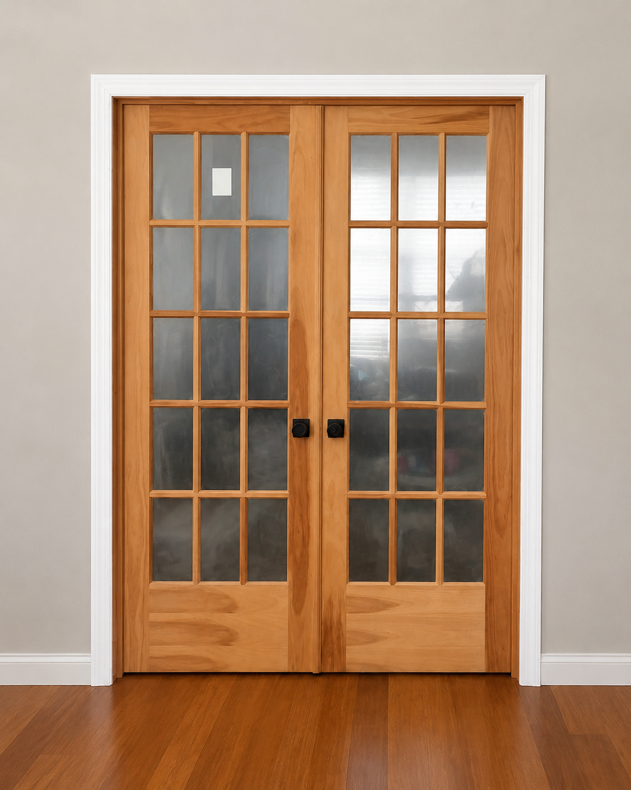
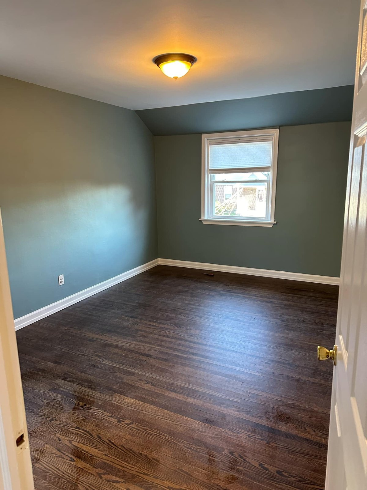
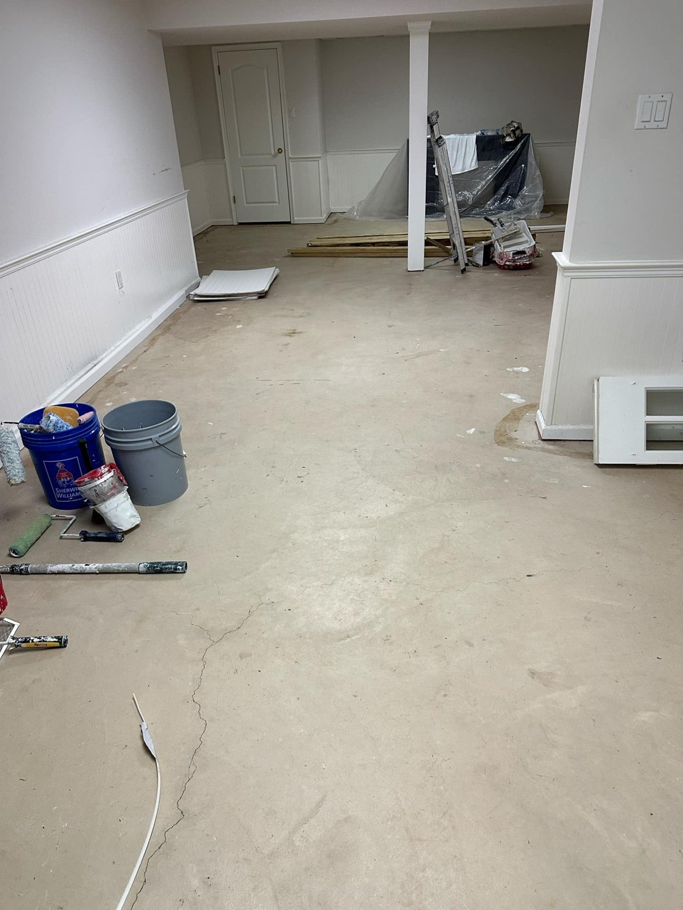
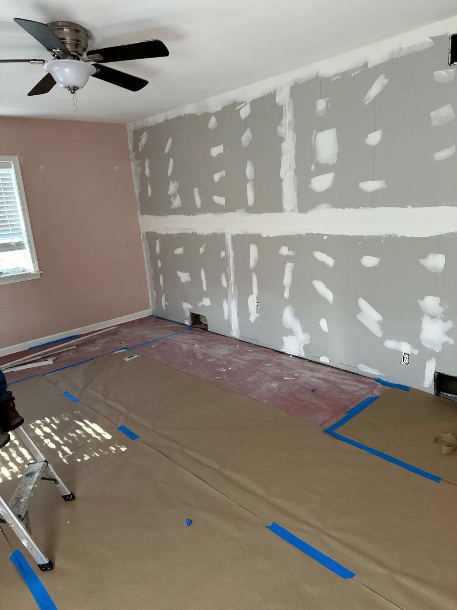
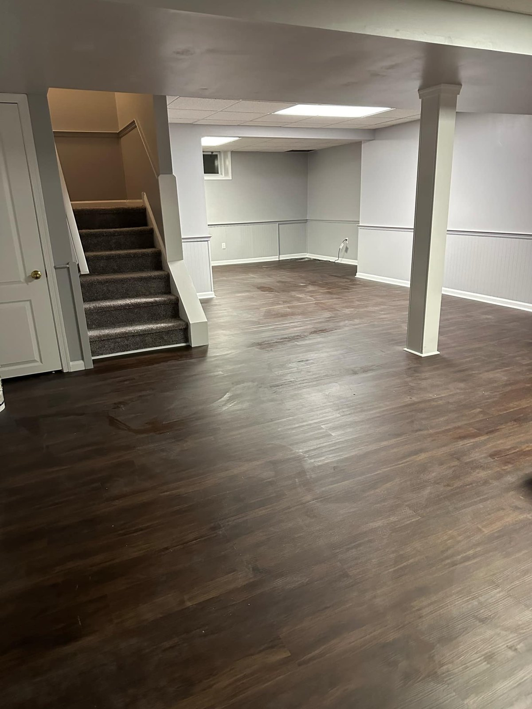
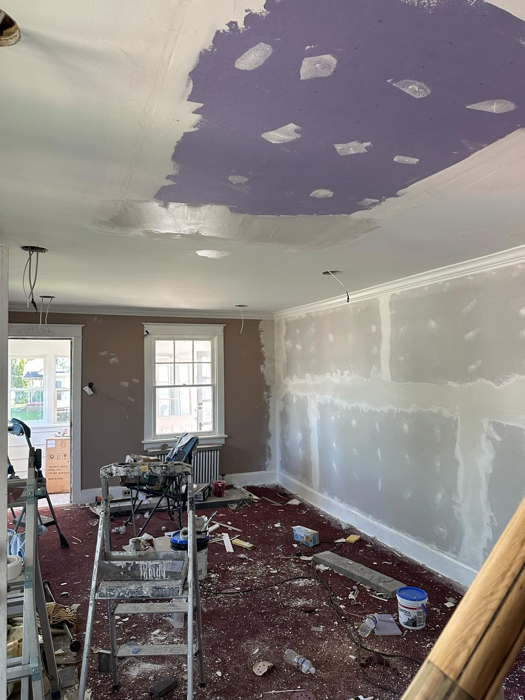
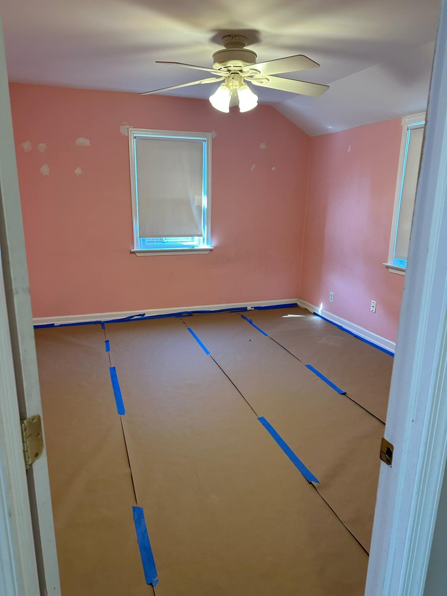
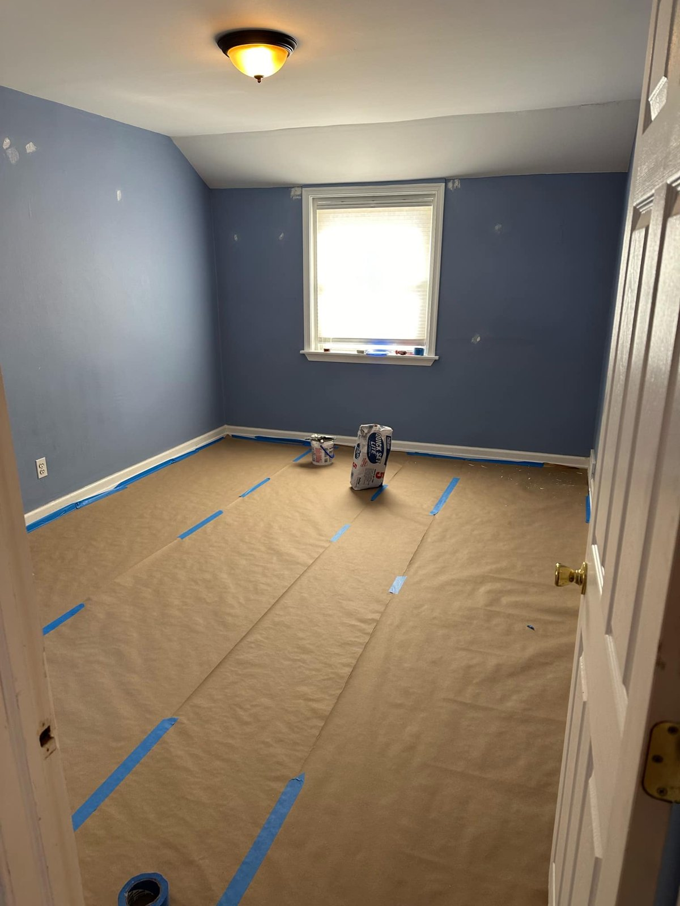
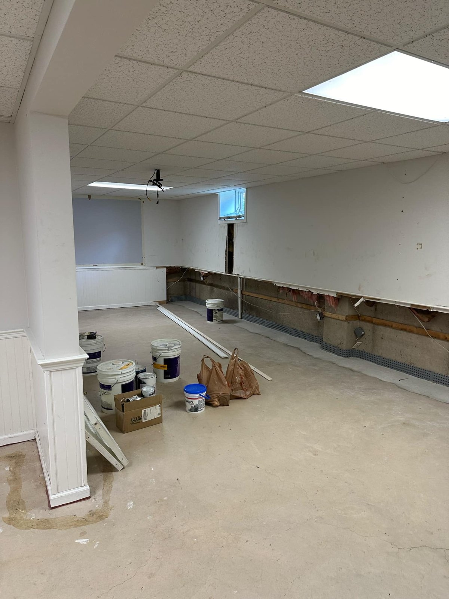

We Fix It. We Haul It.
Home repairs, cleanouts, drywall, TV mounting, fence repair, plumbing repairs, pressure washing, painting, flooring, door replacement, seller prep, rental turnovers, and property maintenance for South Jersey homeowners. We also help landlords, rental owners, and property managers with tenant turnovers, move-out repairs, junk removal, punch lists, and rental-ready repairs.
From drywall repair and TV mounting to fence repairs, bathroom updates, junk removal, pressure washing, and rental maintenance, South Jersey Repairs helps keep homes and properties looking their best.
Call or text photos for faster quotes on repairs, installs, cleanouts, and property maintenance.


Fence Repairs
South Jersey Repairs helps homeowners, landlords, investors, and property managers with fence repairs, fence gate repairs, loose panels, leaning sections, storm damage repairs, and exterior property maintenance across South Jersey, Philadelphia, and surrounding areas.
Core Repair & Property Services
South Jersey Repairs focuses on practical home repair and property maintenance: drywall repair and installation, TV mounting, fence repair, junk removal, pressure washing, bathroom refresh items, furniture assembly, cabinet repair, deck painting, rental turnovers, move-out repairs, and cleanout services across South Jersey, Philadelphia, and surrounding areas.
From wall patches and TV mounting to fence repairs, cleanouts, exterior washing, bathroom caulking, cabinet fixes, and punch-list repairs, South Jersey Repairs helps keep homes and properties looking their best.

TV Mounting
TV mounting for living rooms, bedrooms, apartments, offices, rentals, and home setups. Great for homeowners who want a cleaner look without dealing with brackets, studs, leveling, and setup.

Drywall Repair & Installation
Drywall patches, wall repairs, ceiling repairs, water-damage areas, sheetrock repair, new drywall installation, finishing, sanding, and paint-ready prep.
Fence Repairs
Fence panel repairs, gate repairs, loose boards, leaning sections, minor storm damage repairs, and exterior property maintenance for homes and rental properties.

Everyday Home Repairs & Installations
South Jersey Repairs helps homeowners, landlords, and property owners with drywall repair, drywall installation, TV mounting, furniture assembly, cabinet repair, deck painting, deck staining, pressure washing, bathroom caulking and refresh items, shelving installation, door and trim repair, move-in repairs, move-out repairs, and general property maintenance across South Jersey, Philadelphia, and surrounding areas.

House Washing & Pressure Washing
Exterior cleaning for homes, siding, patios, sidewalks, driveways, fences, decks, walkways, and property cleanup projects.

Junk Removal & Property Cleanouts
Junk hauling, garage cleanouts, move-out cleanups, rental property cleanouts, furniture removal, trash removal, and cleanup help for homes and properties.

Bathroom Repairs & Updates
Bathroom repairs, fixture swaps, caulking, small updates, cleanup, refresh work, and repair items that help bathrooms look better and function better.
More Services
Click a service below to see more details, areas served, and quote options.
For Homeowners Who Need Things Fixed
Most homeowners do not want to chase different companies for every small repair. South Jersey Repairs helps handle the real repair list: TV mounting, drywall patches, cleanouts, pressure washing, bathroom repairs, and punch-list items.
Whether you just moved in, are getting ready to sell, need a room finished, or finally want to knock out the repairs you have been putting off, we help with practical home repair and improvement work across South Jersey and the Philadelphia area.
Common Homeowner Jobs
- TV mounting and setup
- Drywall repair and drywall installation
- Ceiling and wall patching
- Bathroom repairs and caulking
- Furniture assembly
- Light fixture and ceiling fan installation
- Door, trim, and touch-up repairs
- Pressure washing and exterior cleaning
- Garage, basement, and shed cleanouts
- Move-in and move-out repair lists
Home Repair Services We Handle
South Jersey Repairs handles the everyday repair, installation, cleanout, drywall, and property maintenance jobs that homeowners, landlords, and property managers need done across South Jersey, Philadelphia, and surrounding areas.
Drywall Repair & Full Drywall Installation
Drywall is one of the most important repair services for homes and rentals. We help with holes in walls, ceiling patches, damaged sheetrock, water-damaged drywall areas, access-panel patching, drywall replacement, new drywall installation, finishing, sanding, and paint-ready prep.
- Wall patch repair
- Ceiling drywall repair
- Drywall installation
- Sheetrock repair
- Water damage drywall repair
- Rental turnover drywall repairs
TV Mounting Services
TV mounting is a high-demand service for homeowners, apartments, rentals, bedrooms, living rooms, finished basements, and offices. We help with mounting TVs, leveling, bracket setup, stud placement, safer installs, and cleaner room layouts.
- Living room TV mounting
- Bedroom TV mounting
- Apartment TV mounting
- Large TV mounting
- TV bracket installation
- Home entertainment setup help
Junk Removal & Cleanouts
Junk removal is useful for homeowners, landlords, property managers, real estate agents, and tenants moving out. We help remove unwanted items, clean up properties, clear garages and basements, and handle move-out junk or rental cleanup.
- Garage cleanouts
- Basement cleanouts
- Rental property cleanouts
- Furniture removal
- Move-out cleanups
- Trash and debris hauling
House Washing & Pressure Washing
Exterior cleaning helps homes and rental properties look maintained. We help with house washing, pressure washing, sidewalks, driveways, patios, decks, fences, walkways, and exterior cleanup before parties, listings, move-ins, or seasonal maintenance.
- House washing
- Siding cleaning
- Driveway pressure washing
- Patio and walkway cleaning
- Fence and deck cleaning
- Property exterior cleanup
More Home Repair & Maintenance Services
South Jersey Repairs is built around the everyday repairs, installations, cleanouts, and property maintenance services homeowners and property owners actually need across South Jersey, Philadelphia, and surrounding areas.
More Than a Basic Handyman Service
South Jersey Repairs offers local handyman services, but the goal is bigger than one small repair. We help homeowners, landlords, investors, and property managers with a wider range of home repair, installation, cleanout, drywall, pressure washing, and property maintenance projects across South Jersey, Philadelphia, and surrounding areas.
Instead of searching for a different person for drywall repair, TV mounting, junk removal, bathroom refresh items, furniture assembly, cabinet repair, deck painting, cleanouts, or rental turnover repairs, customers can call one local repair company that handles multiple property needs.
Why Choose South Jersey Repairs?
- Broader service range than a basic handyman visit
- Drywall repair and full drywall installation
- TV mounting, furniture assembly, and installation help
- Bathroom caulking, fixture updates, cabinet fixes, and punch-list repairs
- Ceiling fan installation and light fixture installation
- Junk removal, property cleanouts, and move-out cleanup
- Pressure washing, house washing, deck painting, and deck staining
- Homeowner repairs plus landlord and rental property maintenance
- One company for punch lists, repairs, installs, cleanouts, and upkeep
Property Maintenance for Landlords, Investors & Managers
Homeowners are a major part of the business, but South Jersey Repairs is also built for rental property owners, landlords, small investors, real estate agents, and property managers who need reliable help between tenants or before listing a property.
Instead of calling a drywall person, junk hauler, pressure washer, assembler, and repair tech separately, property owners can use one local repair company for the punch list, cleanup, and maintenance items.
Rental & Turnover Help
- Move-out repair lists
- Rental property cleanouts
- Drywall patches and installs
- Bathroom repair items
- Fixture swaps and small repairs
- Pressure washing before showings
- Junk removal after tenants move out
- General maintenance between tenants
Serving South Jersey, Philadelphia & Surrounding Areas
South Jersey Repairs serves Burlington County, Camden County, Gloucester County, Mercer County, Philadelphia, and surrounding communities for drywall repair, TV mounting, junk removal, fence repairs, pressure washing, handyman services, home repairs, and property maintenance.
Burlington County
- Burlington
- Burlington Township
- Mount Laurel
- Marlton
- Medford
- Moorestown
- Cinnaminson
- Delran
- Riverside
- Willingboro
- Bordentown
- Lumberton
- Southampton
- Tabernacle
- Shamong
Camden County
- Cherry Hill
- Voorhees
- Haddonfield
- Collingswood
- Pennsauken
- Audubon
- Oaklyn
- Blackwood
- Gloucester Township
- Sicklerville
- Berlin
- Somerdale
- Lindenwold
- Winslow Township
Gloucester County
- Deptford
- Turnersville
- Washington Township
- Sewell
- Glassboro
- Woodbury
- West Deptford
- Mullica Hill
- Pitman
- Monroe Township
Mercer County & Philadelphia Area
- Trenton
- Hamilton
- Robbinsville
- Lawrence Township
- Ewing
- Northeast Philadelphia
- Port Richmond
- Fishtown
- Manayunk
- Roxborough
- South Philadelphia
- Center City Philadelphia
Why South Jersey Repairs
The goal is simple: be the local repair company people think of when something needs to be fixed, mounted, patched, cleaned out, washed, updated, or maintained.
- Clear communication by call or text
- Real local service across South Jersey and nearby Philadelphia
- Helpful for both homeowners and property owners
- Broad service range for everyday repair needs
- Real work photos, not only stock images
- Fast scheduling when available without overpromising unrealistic arrival times
Built for the Full Repair List
Many customers do not need one tiny task. They need a few things handled together: mount the TV, repair drywall, remove junk, clean the exterior, fix a bathroom item, assemble furniture, and finish the punch list.
South Jersey Repairs is positioned for that full home repair and property maintenance need.
Recent Projects
Real home repair, drywall, painting, flooring, and property maintenance work completed across South Jersey.








What Customers Are Saying
Real feedback from homeowners and property owners across South Jersey.
Outlet Installation – Cherry Hill
“Jeff in Cherry Hill was thrilled to finally have a working outlet installed correctly. Fast response and professional work.”
Deck Soft Washing – Moorestown
“Kim in Moorestown was extremely happy with how the deck came out after soft washing. The wood looked restored and much cleaner.”
Fence Repair – Marlton
“Alan was happy with the fence repair work and how quickly the damaged section was fixed.”
Drywall Repairs – Mount Laurel
“Tim was very happy with the drywall repairs and how clean everything looked after the work was completed.”
Frequently Asked Questions
These answers help customers and search engines understand what South Jersey Repairs offers.
Do you offer TV mounting?
Yes. South Jersey Repairs offers TV mounting for homes, apartments, bedrooms, living rooms, rentals, and offices across South Jersey and the Philadelphia area.
Do you install drywall or only repair it?
We offer both drywall repair and drywall installation. That includes wall patches, ceiling repairs, sheetrock repair, new drywall installs, finishing, sanding, and paint-ready prep.
Do you help homeowners with small repair lists?
Yes. We help homeowners with punch lists, move-in repairs, move-out repairs, fixture work, bathroom repairs, trim, doors, drywall, mounting, assembly, and general home repair items.
Do you work with landlords and property managers?
Yes. We help landlords, real estate investors, and property managers with rental turnovers, cleanouts, drywall repairs, junk removal, fence repairs, pressure washing, and maintenance items.
Do you offer junk removal?
Yes. We help with junk removal, furniture removal, garage cleanouts, basement cleanouts, move-out cleanups, rental cleanouts, and general property cleanup.
Do you service Cherry Hill and Camden County?
Yes. We service Cherry Hill, Voorhees, Haddonfield, Collingswood, Pennsauken, Blackwood, Gloucester Township, Sicklerville, Berlin, and nearby Camden County areas.
Do you service Philadelphia?
Yes, select Philadelphia-area jobs may be available depending on the location, scope of work, and schedule. This may include Northeast Philadelphia, Port Richmond, Fishtown, Manayunk, Roxborough, South Philadelphia, and nearby areas.
Do you replace garbage disposals, faucets, and toilets?
Yes. South Jersey Repairs can help with common home repair and installation jobs such as garbage disposal replacement, faucet replacement, toilet replacement, bathroom repairs, and related punch-list items.
Do you install ceiling fans and light fixtures?
Yes. Ceiling fan installation, light fixture installation, shelving, furniture assembly, and other everyday installation jobs may be available depending on the project and location.
Do you offer deck painting or deck staining?
Yes. South Jersey Repairs can help with deck painting, deck staining, pressure washing, exterior cleaning, and property refresh projects for homeowners and rental properties.
Do you offer same-day or next-day service?
Same-day and next-day availability may be possible depending on the job, location, and schedule. Call or text to check current availability.
Do you offer fence repairs?
Yes. South Jersey Repairs can help with common fence repairs including loose boards, damaged fence panels, leaning sections, gate repairs, latch repairs, and minor fence maintenance for homeowners and rental properties.
How do I get a quote?
Call, text, or submit the quote form with your location, photos if available, and a short description of what needs to be repaired, mounted, removed, washed, or maintained.
Request a Free Quote
Tell us what you need repaired, installed, mounted, cleaned out, washed, or maintained. Add your town and photos if you have them for the fastest response.
Request a Quote
Helpful Quote Details
For the fastest quote, include:
- Your town or neighborhood
- The service needed
- Photos of the repair area or items
- Whether it is a home, apartment, rental, or business
- Any deadline or timing issue
Call or text: Call